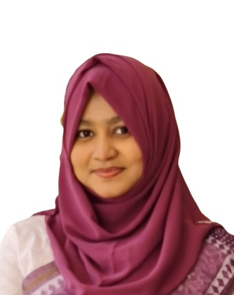

Arzoo Binta Arman
Environmental Researcher & GIS Analyst
I work at the intersection of environmental science and spatial analysis — designing GIS-based sampling frameworks for contamination studies and producing research on Bangladesh's energy sector, from power-plant status reports to national policy briefs.

An applied environmental scientist working in the field, in the lab, and in GIS.
I am currently pursuing an MSc in Environmental Science at Khulna University while working full-time as a Research Officer at the Coastal Livelihood and Environmental Action Network (CLEAN), where I lead the design, implementation, and evaluation of research projects across the energy and environmental sectors.
My academic background centres on environmental science, with coursework in remote sensing and GIS, water resource planning, natural resource management, and environmental modelling. My current MSc thesis, supported by a National Science and Technology (NST) Fellowship, develops a GIS-optimized sampling framework to map the spatial distribution of heavy metals at a municipal landfill site — building directly on my BSc thesis on heavy metal concentrations in soil and vegetables near a waste dumping area.
At CLEAN, that spatial and analytical background carries over into applied policy work: authoring and co-authoring research papers and technical reports on electricity consumption and energy transition, serving as rapporteur for national and international programs, and presenting research findings at forums such as the Bangladesh Energy Conference.
Where my work sits
Five threads run through my research and professional work to date, each grounded in a specific project, thesis, or role rather than a general interest.
GIS & Spatial Analysis
Site analysis mapping, spatial sampling design, and advanced spatial and statistical analysis in ArcGIS and QGIS, applied to contamination studies and infrastructure monitoring.
Energy Sector Research
Research on electricity consumption across economic sectors and rural areas of Bangladesh, and analysis of energy transition commitments in national policy.
Soil & Landfill Contamination
Heavy metal concentration analysis in soil and vegetables near waste dumping sites, and GIS-optimized sampling frameworks for landfill contamination mapping.
Policy Briefs & Reporting
Authoring technical reports and policy briefs for national and international audiences, and serving as rapporteur for programs such as the Regional Infrastructure Monitoring Alliance (RIMA).
Data & Statistical Analysis
Quantitative and statistical analysis of research and field data using Python, R, and IBM-SPSS, in support of environmental and energy-sector studies.
Climate & Natural Resource Management
Academic and applied training in meteorology and climate change, natural resource management, and remote sensing, including Google Earth Engine applications.
Experience
Both roles held at the Coastal Livelihood and Environmental Action Network (CLEAN), Khulna.
- Leads the design, implementation, and evaluation of research projects in the energy and environmental sectors.
- Presented CLEAN's research findings on the current state of the energy sector at national and international forums, including the Bangladesh Energy Conference 2025.
- Serves as author and co-author on research papers, technical reports, and policy briefs for national and international audiences.
- Appointed rapporteur, preparing national and international program reports such as for the Regional Infrastructure Monitoring Alliance (RIMA).
- Conducts advanced spatial and statistical analysis using ArcGIS and other tools.
- Supported data collection, management, and preliminary analysis for the preparation of power plant status reports.
- Used ArcGIS to create detailed site analysis maps and basic spatial data visualizations for project teams.
- Drafted case stories and research summaries from field insights and secondary data review.
- Assisted in organizing national and international programs, workshops, and stakeholder meetings on sustainable energy initiatives.
Projects
Selected research and field projects, spanning academic thesis work and applied research at CLEAN.
Spatial Distribution of Heavy Metal Using a GIS-Optimized Sampling Framework at the Rajshahi City Landfill Site
Ongoing MSc thesis research, supported by the National Science and Technology (NST) Fellowship 2025–26, developing a GIS-optimized sampling framework to map how heavy metal contamination is spatially distributed across a municipal landfill site in Rajshahi.
METHODS
ROLE
MSc Researcher, NST Fellow
Heavy Metal Concentration in Soil and Vegetables Beside a Waste Dumping Area, Rajshahi City
Undergraduate thesis examining heavy metal concentrations in soil and vegetable samples collected near a waste dumping site in Rajshahi City, under the supervision of Dr. Abul Kalam Azad, Professor, Environmental Science Discipline, Khulna University.
METHODS
SUPERVISOR
Dr. Abul Kalam Azad
Power Plant Status Reporting & Site Analysis Mapping
Supported data collection and preliminary analysis for power plant status reports as a Research Intern, and produced detailed ArcGIS site analysis maps and spatial data visualizations for the project team.
METHODS
ROLE
Research Intern
Regional Infrastructure Monitoring Alliance (RIMA) — Program Reporting
Appointed rapporteur for the Regional Infrastructure Monitoring Alliance (RIMA), preparing the national and international program report as part of ongoing responsibilities as Research Officer.
OUTPUT
ROLE
Rapporteur
Ongoing thesis
Spatial Distribution of Heavy Metal Using a GIS-Optimized Sampling Framework at the Rajshahi City Landfill Site
ENVIRONMENTAL PROBLEM
Heavy metal contamination at municipal landfill sites, and the need for spatially-informed sampling to characterise how it spreads.
APPROACH
A GIS-optimized sampling framework applied to the Rajshahi City landfill site, building on undergraduate thesis work on soil and vegetable contamination near waste dumping areas.
SUPPORT
National Science and Technology (NST) Fellowship 2025–26, Ministry of Science and Technology, Government of Bangladesh.
Publications & Reports
Research papers and reports authored or co-authored for CLEAN and BWGED.
Skills & Tools
PROGRAMMING
- Python
- R
DATA ANALYSIS
- IBM SPSS
- Microsoft Excel
GIS & PROJECT TOOLS
- ArcGIS
- QGIS
- MS Project Management
REFERENCING
- Zotero
- Mendeley
- EndNote
Academic background
Professional development
TRAINING & CERTIFICATION
- Computer Fundamentals and Office Management (MS Office, Excel, PowerPoint) — EDGE KUCSE Digital Skills Training, certified by Bangladesh Computer Council (BCC)
- Applications of Google Earth Engine (GEE) in Natural Resource Management — Khulna University
- Professional Training on Remote Sensing and GIS — Bangladesh Poribeshbid Society (BPS)
- Environmental Management Systems Awareness (ISO 14001:2015) — Certificate No. AJA EMS-0125-083
- Basic R Programming — Khulna University
- Academic Referencing Tools (Zotero, Mendeley, EndNote) — Khulna University
CONFERENCES, SEMINARS & WORKSHOPS
- Presenter, Bangladesh Energy Conference 2025
- Participant, 2nd International Conference on Environment — "Time for Nature and Natural Resource Management," March 2024
- Participant, National Seminar on Awareness Building Campaign on Adverse Impact of Climate Change, June 2024
- Participant, district workshop on Coastal Crisis Management, arranged by LEDARS, October 2024
How I work
"To leverage academic background and technical skills in environmental science, GIS, and research to contribute effectively to sustainable development, data analysis, and communication — driving impactful solutions by collaborating with diverse teams, applying innovative methodologies, and fostering informed decision-making in environmental management, community development, and sustainability."
Geographic focus
Research and fieldwork to date has centred on two cities in Bangladesh.
Khulna University & CLEAN
Base for MSc studies at Khulna University and for research work at the Coastal Livelihood and Environmental Action Network (CLEAN).
Landfill & soil contamination fieldwork
Site of both BSc and ongoing MSc thesis research on heavy metal contamination in soil, vegetables, and landfill sampling.
Get in touch
Open to research collaboration, academic inquiries, and opportunities in environmental research and GIS.
- EMAILarzooarmanbd@gmail.com
- PHONE+880 1794 064753
- LINKEDINlinkedin.com/in/arzooarman
- LOCATIONKhulna University, Khulna, Bangladesh
For academic references, please reach out directly and I will connect you with my thesis supervisor or discipline head at Khulna University.